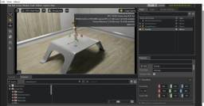
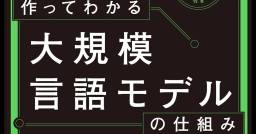
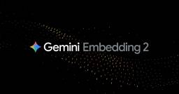

npaka
https://note.com/npaka
プログラマー。iPhone / Android / Unity / ROS / AI / AR / VR / RasPi / ロボット / ガジェット。年2冊ペースで技術書を執筆。アニソン / カラオケ / ギター / 猫 twitter : @npaka123
フィード
ROS2 × Docker で Fast DDS を UDPv4 のみにする理由
npaka
「ROS2 × Docker」で「Fast DDS」を「UDPv4 のみ」にする理由をまとめました。続きをみる
1日前
Docker で Isaac Sim 5.1 を起動してROS2 Bridge でロボット制御を試す 1
1
npaka
「Docker」で「Isaac Sim 5.1」を起動して「ROS 2 Bridge」でロボット制御を試したのでまとめました。続きをみる
2日前

Docker で Isaac Sim 5.1 を起動してStreaming Client でUI表示を試す
npaka
「Docker」で「Isaac Sim 5.1」を起動して「Streaming Client」でUI表示を試したのでまとめました。続きをみる
2日前

【書評】 作ってわかる大規模言語モデルの仕組み 1
npaka
LLM（大規模言語モデル）の本はいろいろ出てきていますが、この『作ってわかる大規模言語モデルの仕組み』はかなりの良書です。理由はシンプルで、LLMを実際に作りながらその仕組みを理解できる本だからです。最近はLLMの解説記事や論文も増え、「Transformer」「LoRA」「RLHF」「DPO」といった言葉もよく見かけます。しかし、単語としては知っていても、続きをみる
3日前

Gemini Embedding 2 の概要 46
npaka
以下の記事が面白かったので、簡単にまとめました。・Gemini Embedding 2: Our first natively multimodal embedding model続きをみる
5日前

【書評】 最速でわかる生成AI実践ガイド
npaka
近年、AIの世界では「プロンプトエンジニアリング」「RAG」「AIエージェント」といった言葉を頻繁に耳にするようになりました。しかし、ニュースやSNSで断片的に知っていても、それらが実際にどのような仕組みで動いているのかを説明できる人は、まだそれほど多くありません。『最速でわかる生成AI実践ガイド』は、そうした「なんとなく知っているAI」を体系的な理解へと変えてくれる一冊になります。続きをみる
12日前
Gemini 3.1 Flash-Lite の概要
npaka
以下の記事が面白かったので、簡単にまとめました。・Gemini 3.1 Flash-Lite: Built for intelligence at scale続きをみる
12日前
技研AIマーケット3 でAI同人誌を頒布します
npaka
2026年3月7日（土）に開催される「技研AIマーケット3」 にて、AI4コマ漫画『そらみ と へにへに のゆるふわAI研究所』 とAIストーリー漫画『そらテラ』（技術解説付き） を頒布します。AIアニメ、AIゲーム、AIロボットのデモなども持っていく予定です。よろしくお願いします。続きをみる
13日前
Blender Fes 2026 SS で Blender × AI活用入門 についてお話しします
npaka
3月28日・29日に開催される「Blender Fes 2026 SS」で「Blender × AI活用入門」についてお話しします。 よろしくお願いします。続きをみる
13日前